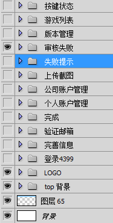

1) 尽量使用一个PSD文件完成你的设计
可以这样:(其余页面图层合并)
不要这样:一张PSD，一张页面。
精确地进行文件命名
特别是版本更新迭代的情况下，如何组织文件名?(建议尽量中文名:海贼大冒险_情封_0203)
如果是大型网站，建议为所有的UI元素建立一个模板(比如my社区,动漫频道，早教频道)，以达到视觉效果统一
建立这个UI元素模板，对FE来说也是有利的，比如图片雪碧.
合理地命名每一个图层
如果图层少的话，还可以，一旦图层多的话，要查找一个图层比较困难
使用文件夹,即传说中的组
组可以很好的处理层次关系，以及文件的顺序
注意点:文件夹的顺序问题，采用一个自上而下的分布，比如顶部,banner,导航，内容，底部
建议使用栅格系统
比较常用的栅格系统标准有960,978等
排版上使用栅格标准能够使内容组织更加清晰点
栅格系统地址:
删除没有必要的图层，隐藏一些有用的图层
设计一小步，前端一大步，在前端上可以节省很多时间的。
前端：切背景图，要隐藏图层，会导致混乱
将类似的元素组织在一起
把一些共用的元素提取出来，用上一级组封装好。
不要使用变形工具来更变文字的大小，不用使用PS当中给的一些类似13，21这些不常规的文字大小。。
为了保证圆角弧度的统一，不要使用拉伸，要修改尽量使用路径工具，可以使用部分路径选择工具。（前端注意）
利用PS中的对齐功能，例如视图中的可选择参考线，智能参考线，边框参考线，以保证模块边缘对齐。
设计师的参考线，前端的参考线不同点？
有些文字跟按钮的样式，更喜欢用图层样式中的颜色叠加
多个按钮变化颜色？
考虑到CSS的复杂度，不要太过度使用渐变性的pattern.(设计师跟前端沟通)
不管起始是颜色还是图案，尽量过度到背景颜色。
考虑到背景图片大小，图片不要过长。
这两个值不宜过大，前端眼中不太喜欢这两个属性，特别是大背景不规则的，模块又循环。
内部描边相对来说更加精确，而居中或外部描边会成圆角。
注意校对，特别是网页游戏中，背景图片颜色比较丰富，注意一些背景融合，看看模块边缘是否超出辅助线，模块是否跟大背景融合。
注意校对，特别是网页游戏中，背景图片颜色比较丰富，注意一些背景融合，看看模块边缘是否超出辅助线，模块是否跟大背景融合。
养成把PSD保存成一份JPG，试试ctrl+shift+alt+s,看看网页save for web & devices后的效果
QA~~